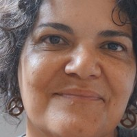

Sonia Guimarães
Apprentice Developer
Contato
- +55 81 99929-3002
- soniabs@gmail.com
- www.sonia.com
- https://github.com/SoniaBGS
skills
Etnomusicolia, Arte Educação, Música
HTML, CSS, Bootstrap
- GIT & Github
C#, .NET
Sonia Guimarães
Apprentice Developer
Contato
skills
Etnomusicolia, Arte Educação, Música
HTML, CSS, Bootstrap
C#, .NET
Arte Educadora com Especialização em Etnomusicologia, Cantora e Compositora. Curadora de Projetos de Música. Compositora e Diretora Musical de espetáculos desde 1995. Experiência de 16 anos como Coordenadora de Projetos e Atividades de Música do SESC Pernambuco, respondendo pela criação e gestão de projetos de âmbito estadual e na curadoria de projetos de âmbito nacional.
Criadora de Trilhas Sonoras para Espetáculos de Teatro, Dança e Circo, Cantora e Compositora; Criadora e Gestora de Pojetos Atísticos. Atuo e tenho Interesse em pesquisas sononras, pincipalmente das expressões culturais dos povos oiginários do Brasil e outras partes do mundo,
além de de ecologia sonora.